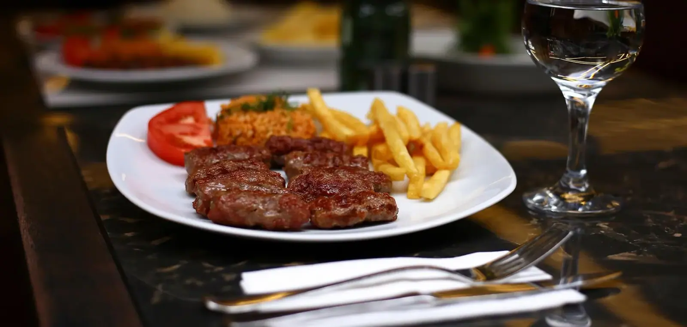
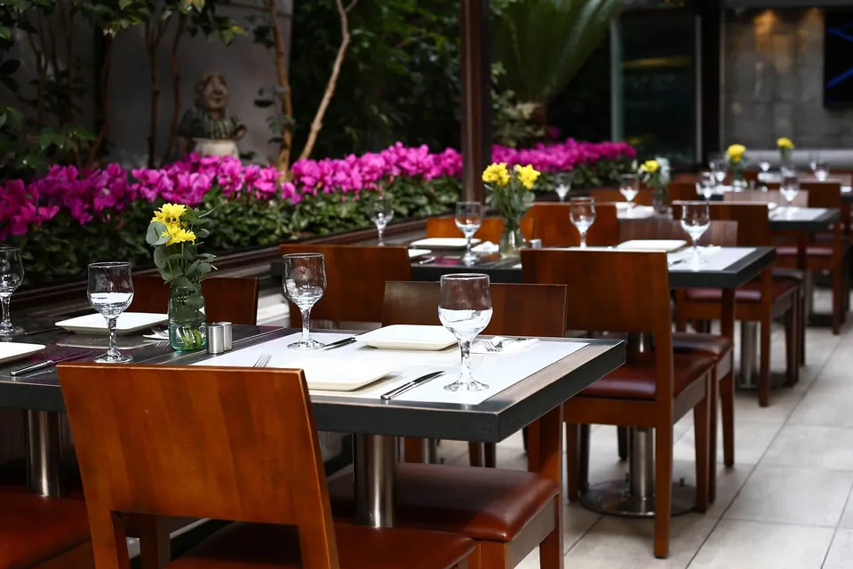
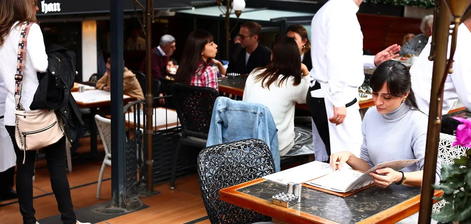
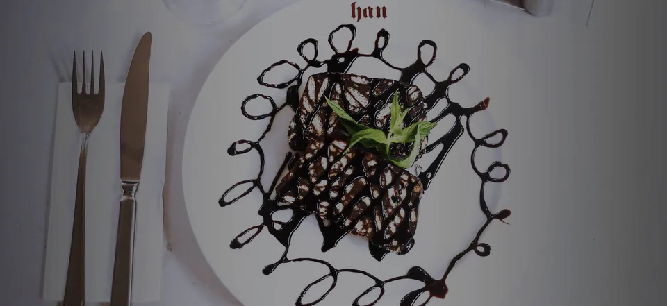
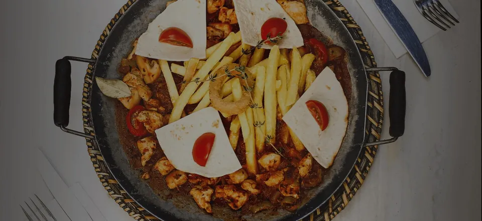

Geçmişten gelen lezzet
Osmanlı usulü hamur ve tatlı işlerinden hafif ve organik salatalara, Norveç somonundan Cafe de Paris soslu bifteğe kadar çok çeşitli bir menü sunuyoruz.
- Şimdi
- SaatlerPzt-Paz 12:00–22:00
- AdresŞaşkınbakkal Mahallesi, Bağdat Cd. No:351, 34740 Suadiye-Kadıköy/İstanbul
- Telefon+90 216 302 1919
Han Restoran
Teras, masa ve tabaklar
Bağdat Caddesi'ndeki çiçekli teras, konuklar ve servis edilen tabaklar.




Şaşkınbakkal
Bağdat Caddesi'nde, Şaşkınbakkal'da
| Pazartesi | 12:00–22:00 |
|---|---|
| Salı | 12:00–22:00 |
| Çarşamba | 12:00–22:00 |
| Perşembe | 12:00–22:00 |
| Cuma | 12:00–22:00 |
| Cumartesi | 12:00–22:00 |
| Pazar | 12:00–22:00 |
Telefon+90 216 302 1919
- Han, 1961'de Ankara'da İnegöl adıyla kuruldu; 1985'te İstanbul'a, Bağdat Caddesi'ne taşındı ve adı Han oldu.
- Haftanın her günü 12.00-22.00 arasında açığız.